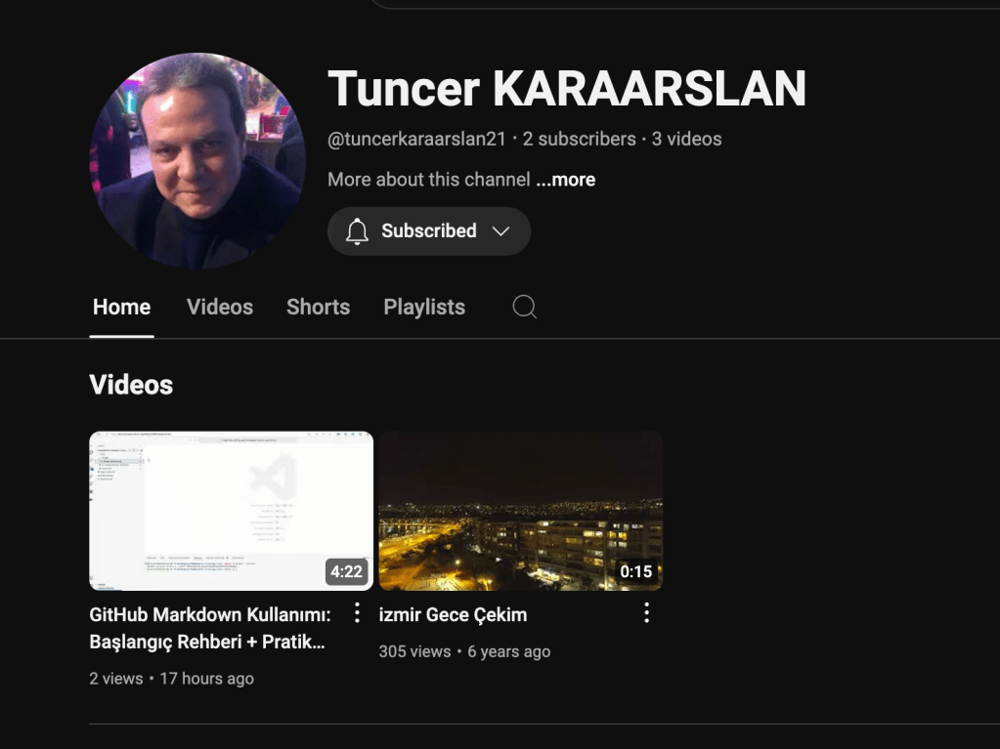
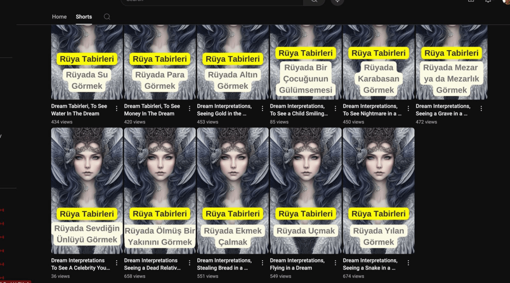

🎬 Video Production: How-To Videos vs. Entertainment
How Traffic

High Traffic

In the ever-expanding world of content creation, there’s an ongoing debate between how-to technical videos and entertainment-focused videos. While both have value, entertainment tends to draw significantly larger audiences. But why? 🤔 And how can technical video producers adapt to this trend while staying true to their purpose? Let’s break it down!
🎭 Why Entertainment Attracts More Views
Entertainment videos have a natural edge. They appeal to human emotions and provide a sense of escape, which is something many people crave. Here are a few key reasons why they often outshine how-to videos in terms of viewership:
-
Emotional Engagement 💖: Stories, humor, and drama create an emotional bond with viewers. They feel connected and want to come back for more.
-
Simplicity & Ease of Consumption 🎮: Entertainment videos often require little to no mental effort to enjoy. Viewers can relax and be entertained, compared to how-to videos which demand focus and action.
-
Broad Appeal 🌍: While a technical video might target a niche audience, entertainment videos can often appeal to a wider demographic.
-
Social Sharing 📲: People love sharing content that makes them laugh, cry, or feel inspired. Entertainment tends to go viral much more easily.
🎓 The Challenges for How-To Videos
Technical videos, while packed with value, face challenges when competing with entertainment content. Here’s why:
-
Niche Audience 🎯: How-to videos serve a specific purpose, often catering to a smaller, more focused group of people.
-
Learning Curve 📚: Viewers need to invest time and energy to understand and follow along with the instructions.
-
Lack of Emotional Hook 😐: The content is often dry and straight-to-the-point, which can limit engagement.
However, the value of how-to content cannot be overstated. These videos provide actionable insights that help viewers learn a new skill, solve a problem, or improve their knowledge. So, how do you make these videos as engaging as possible?
🚀 What You Can Do to Enhance How-To Videos
To compete with entertainment-focused videos, here are a few tactics you can implement to keep your audience engaged and coming back for more:
-
Add a Personal Touch 🗣️: Share your own experiences and insights. Adding personal stories makes the content feel relatable and human.
-
Use Entertainment Elements 🎤: Incorporate humor, engaging visuals, and short narratives to keep viewers hooked. Even adding short pauses for comedic effect or a screenshot to highlight progress can boost engagement.
-
Break it Down 📋: Keep things simple and break the information into digestible chunks. Nobody wants to feel overwhelmed by a 20-minute technical tutorial. Use short segments and give viewers breathing space.
-
Interactive Elements 🧑💻: Create quizzes, challenges, or polls to keep your audience involved. This can turn passive viewers into active participants!
-
Mix Formats 🛠️: Alternate between how-to tutorials and more entertaining formats, like vlogs or behind-the-scenes videos, to vary your content and attract new viewers.
⚖️ The Balance Between Entertainment and Education
The key takeaway is that you don’t have to choose one over the other. You can merge the best aspects of both worlds! By injecting personality, humor, and visual storytelling into your how-to videos, you can make them not just informative but engaging and shareable.
As content creators, the goal is to keep viewers hooked while providing value. With the right balance of education and entertainment, your videos can attract wider audiences and create a lasting impact.
🔗 Connect with me:
-
💼 LinkedIn: https://www.linkedin.com/in/rifaterdemsahin/
-
🐦 Twitter: https://x.com/rifaterdemsahin
-
🎥 YouTube: https://www.youtube.com/@RifatErdemSahin
-
💻 GitHub: https://github.com/rifaterdemsahin
Feel free to drop a comment or reach out on any platform if you’d like to discuss content strategies or explore collaborations!
Imported from rifaterdemsahin.com · 2025